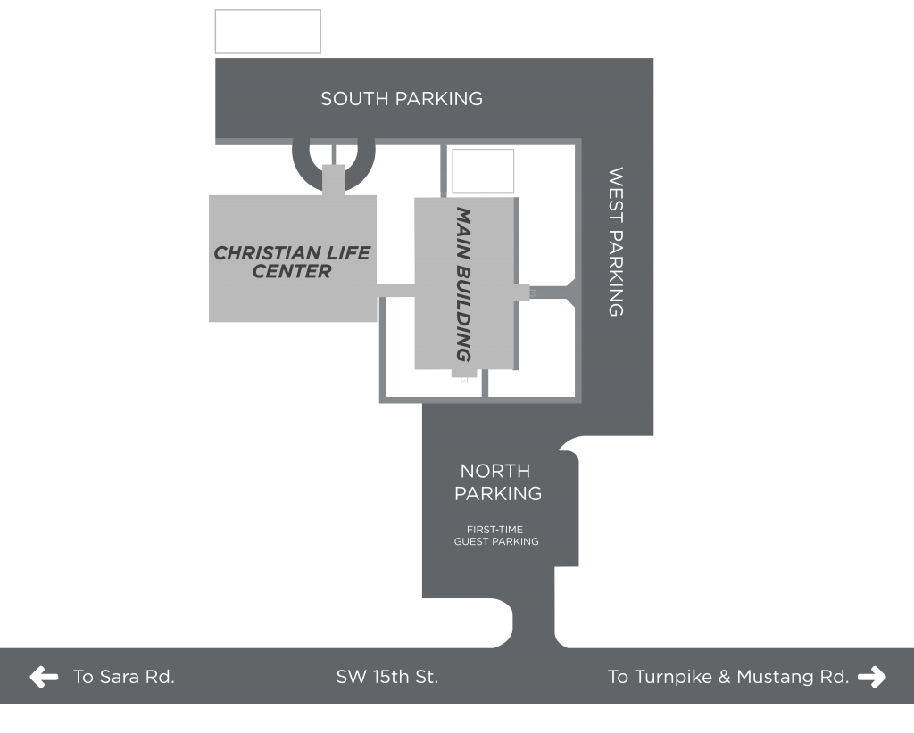

Celebrate Easter With Us
United Methodist Church of the Good Shepherd invites you to join us this Easter (April 5). We'll begin the morning with our annual Sunrise Service. It's held back behind the church on our beautiful "south 40" at the pavilion. It so meaningful to begin Easter as we worship while the sun rises before us. Bring your favorite lawn/camp chair. In case of inclement weather the service will move into our Christian Life Center. A simple breakfast is served after this service. After that the celebration continues at our regular worship times: 8:30 traditional, 9:45 contemporary and 11:00 traditional. Communion will be served at all services. Nursery will be provided at all but the sunrise service and we will have Kids Connect worship at 9:45 and 11:00. We would love to see you this Easter!
Easter Sunday Times
Sunrise Service 6:30 AM
Traditional – 8:30 AM & 11:00 AM
Contemporary – 9:45 AM
Children's Ministry
During Sunday morning worship, we have two available options for your children. Our Nursery is available for birth to PreK, for all four services. We also offer Kids Connect for preK to 5th grade at the 9:45 AM and 11:00 AM services. Where we practice Musical Worship, and teach a more age appropriate message of the same sermon topic being taught in the main service. We also have
special activities planned surrounding Easter sunday, such as Palm Sunday during our Kids Connect, Our Easter Egg Hunt on Saturday, from 10:00 AM to 12:00 PM on the back lawn of our church, and our Easter Sunday Service for the children during the Kids Connect, where we will have a special Easter egg hunt that will help tell the story of Jesus. For more information about our Children's Security and check-in prosess, click the button below to take you there.
We'd Love to Meet You
10928 SW 15th St, Yukon, OK 73099
We are located on SW 15th Street between Mustang and Sara Roads, directly across the street from Mustang North Middle and Mustang Creek Elementary Schools.Free parking is available in the church lot, we also have a special parking area for first time guests located near the front entrance of both the Traditional and the Contemporary Worship Center.

Check-in Process and Security
At the entrance to each classroom, there will be a volunteer or staff member checking in students on a tablet. The first time a student is registered, there will be additional safety information collected (this process should take around 3 minutes). Every returning visit, our volunteer will search your child’s name, and our system will print out 2 tickets, one is a name tag for your child with any relevant safety information listed on it, as well as a randomized code. This code is also printed on the 2nd ticket and given to whoever drops off the student.Please bring this ticket to pickup to ensure we safely return students to the correct adult.
What to Expect
Here at the Church of the Good Sheppard we value the comfort of our guests, dress comfortably and come as you are. Our services typically last about an hour and include uplifting music, a meaningful message, and opportunities for reflection. We have a friendly congregation and welcoming door greeters to help you feel warm as you arrive. For families with children, we offer Children's ministry during the service along with a Nursery for the little ones.
Let us know your coming!
About Us
Our church family welcomes all. We gather for worship, fellowship, and to serve our community. Here at the Church of the Good Shepherd, we strive to create a warm and inviting environment where everyone can grow in their faith and connect with others. We believe in the power of community and the importance of supporting one another on our spiritual journeys.We pray this is a place where you can “learn to follow Jesus”. Our caring, accepting, and diverse congregation invites you to come and worship with us.